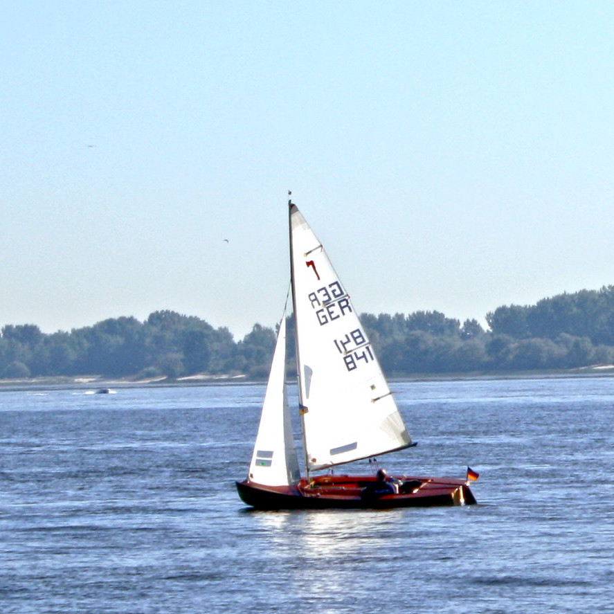

Städtereisen sind toll. Man hat eine bestimmte Stadt zum Ziel gewählt und es steht das Erleben dieser fremden Stadt im Vordergrund. In einer Stadt wird es nie langweilig. Zu entdecken gibt es viel. Man kann verschiedenen Aktivitäten nachgehen, wie zum Beispiel der Besuch von Museen und Kunstgalerien. Gebäude von historischem Interesse, Denkmäler, Gedenkstätten und auch Friedhöfe.
Wenn man Glück hat, finden gerade Veranstaltungen statt, wie zum Beispiel Konzerte, Festivals etc. Nicht zu vergessen sind die vielen Restaurants, Cafés, Shoppingmeilen oder Marktplätze. Für Nachteulen gibt es zumindest in größeren Städten eine Menge Möglichkeiten, die Nacht zum Tag zu machen.
Am bequemsten entdeckt man die Stadt mit einer Stadtrundfahrt. In Städten mit viel Wasser hat man auch die Möglichkeit eine Bootsrundfahrt zu machen. Städtereisen eignen sich hervorragend für Wochenendtrips und Kurzurlaubsreisen.
Niederlande
Amsterdam
Amsterdam ist die Hauptstadt und bevölkerungsreichste Stadt des Königreichs der Niederlande und liegt am kanalisierten Fluss Amstel und dem früheren Meeresarm IJ. Amsterdam ist für seine Grachten weltberühmt.
Niederlande
Haarlem
Haarlem ist bekannt für seine Boutiquen, Antiquitätenläden und gemütlichen Cafés. Die Goldenen Straßen sind das Herz des Haarlemer Einzelhandels, perfekt für einen Nachmittag Shopping. Die Stadt liegt am Fluss Spaarne.
Niederlande
Zandvoort
Zandvoort ist ein niederländischer Küstenort westlich von Amsterdam. Dank des langen Sandstrandes an der Nordsee ist er besonders bei Badeurlaubern beliebt. Zandvoort lebt überwiegend vom Tourismus.
Österreich
Wien
Wien, die Hauptstadt Österreichs, liegt an der Donau. Ihr künstlerisches und intellektuelles Erbe wurde von Bewohnern wie Mozart, Beethoven und Sigmund Freud geprägt. Die Stadt ist bekannt für ihre kaiserlichen Paläste wie das Schloss Schönbrunn, die Sommerresidenz der Habsburger.
Slowakei
Bratislava
Bratislava ist die Hauptstadt der Slowakei. Es liegt an der Donau und grenzt an Österreich und Ungarn. Bratislava ist von Weingütern sowie den Kleinen Karpaten umgeben, in denen zahlreiche Wander- und Fahrradwege die Wälder durchziehen.
Dänemark
Kopenhagen
Kopenhagen, Dänemarks Hauptstadt, liegt auf den küstennahen Inseln Seeland und Amager. In Indre By, der historischen Altstadt, befindet sich Frederiksstaden, ein Rokokoviertel mit dem Schloss Amalienborg, Residenz der königlichen Familie.